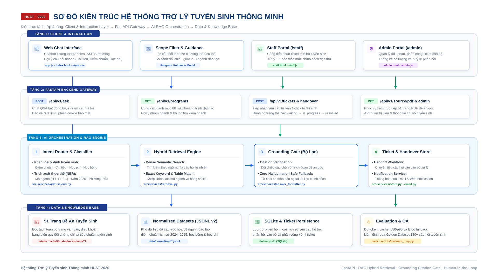

Giao diện Web Chat phản hồi thời gian thực SSE, bộ lọc mã ngành Scope Guidance, cổng cán bộ tuyển sinh (/staff) và trang quản trị (/admin).
Cổng API chuẩn hóa: xử lý hội thoại streaming (/ask), tra cứu 68 mã ngành (/programs), điều phối ticket hỗ trợ chuyên sâu và xem PDF gốc.
Phân loại ý định thông minh, tìm kiếm kết hợp Hybrid BM25 + Vector Semantic, bộ lọc kiểm chứng Grounding Gate chống ảo giác trước khi trả lời.
51 trang Đề án tuyển sinh K71 trích xuất cấu trúc, 68 chương trình đào tạo chuẩn JSONL, SQLite lưu trữ vé hỗ trợ và bộ đánh giá Golden Dataset.